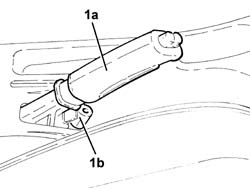
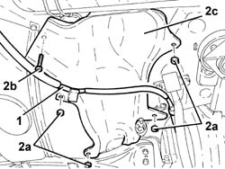
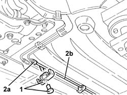
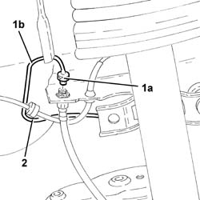
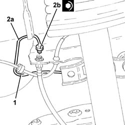
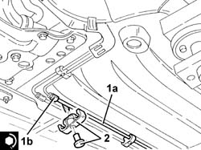

3340B69 rhp brake connection pipe - r r
- Path
- Procedures > 33 BRAKING SYSTEM > 3340 A(B.S. ANTI-LOCK BRAKING SYSTEM .) > 3340B abs system pipes > 3340B69 rhp brake connection pipe - r r
- Kind
- repair procedure (removal / refitting; the operation number is the code)
- Applies to
- all engines; all production periods
- Interactive page
- https://sloeber94.github.io/elrnDB-a147/en/#/3025263
Applies to: all engines; all production periods
 Removing
Removing
 Refitting
RefittingPosition the vehicle on the ramp.
Remove the handbrake boot.
1. Lift up the handbrake lever (1a) and loosen the nut (1b) adjusting the tension of the handbrake cables.

Applies to: engines: 1.6 TS, 2.0 TS, 3.2 V6, 1.9 JTD 8V; all production periods
Proceed with removal 1076B22 rear exhaust silencer - r+r emission control versions .
Proceed with removal 1076B26 intermediate exhaust silencer - r+r emission control versions .
Applies to: engines: 1.9 JTD 16V; all production periods
Proceed with removal 1076B20 rear exhaust silencer - r + r .
Proceed with removal 1076B18 rigid section of exhaust pipe between catalytic converter and silencer - r + r .
Applies to: engines: 1.9 JTD 16V; all production periods
1. Release the handbrake cable from the mounting bracket.
2. Remove the retaining clips (2a), undo the bolt (2b) and remove the intermediate heat shield (2c).

Applies to: engines: 1.9 JTD 16V; all production periods
1. Release the rigid pipe from the connector to the left rear brake from the attachments on the underbody.
2. Undo the connector (2a) and disconnect the rigid pipe from the connector to the left rear brake (2b), connector side.

Applies to: engines: 1.9 JTD 16V; all production periods
1. Undo the connector (1a) and disconnect the rigid pipe from the connector to the left rear brake (1b), left rear brake side.
2. Remove the rigid pipe from connector to rear left brake.

Applies to: all engines; all production periods
Refitting
Removing1. Refit in its seating the rigid pipe from connector to rear left brake.
2. Connect the rigid pipe from the connector to the left rear brake (2a), left rear brake side, and tighten the connector (2b) to the recommended torque.
 | Fastening | Component | Ø | Value (daNm) |
|---|---|---|---|---|
2b | Connector | RIGID PIPE FROM FITTING | M10 | (Rear brake caliper flexible pipe side.) 1.4 ÷ 1.8 |

Applies to: all engines; all production periods
1. Connect the rigid pipe from the connector to the left rear brake (1a), connector side, and tighten the connector (1b) to the recommended torque.
| Fastening | Component | Ø | Value (daNm) |
|---|---|---|---|---|
1b | Connector | RIGID PIPE FROM FITTING | M10 | (Connector side) 1.4 ÷ 1.8 |
2. Secure the rigid pipe from the connector to the left rear brake to the attachments on the underbody.

Applies to: all engines; all production periods
Refit in its seating the intermediate heat shield, and secure it with the bolt and clips.
Secure the handbrake cable to the mounting bracket.
Applies to: engines: 1.6 TS, 2.0 TS, 3.2 V6, 1.9 JTD 8V; all production periods
Proceed with refitting 1076B26 intermediate exhaust silencer - r+r emission control versions .
Proceed with refitting 1076B22 rear exhaust silencer - r+r emission control versions .
Applies to: engines: 1.9 JTD 16V; all production periods
Proceed with refitting 1076B18 rigid section of exhaust pipe between catalytic converter and silencer - r + r .
Proceed with refitting 1076B20 rear exhaust silencer - r + r .
Applies to: engines: 1.9 JTD 16V; all production periods
Bleed the air from the hydraulic braking system 3330A14 HYDRAULIC BRAKING SYSTEM - Bleed air .
Bleed the air from the hydraulic braking system 3380A04 handbrake - check travel .
Place the handbrake boot back in its housing.
Remove the car from the ramps.
Topics linked from this page (6)
- 1076B18 rigid section of exhaust pipe between catalytic converter and silencer - r + r
- 1076B20 rear exhaust silencer - r + r
- 1076B22 rear exhaust silencer - r+r emission control versions
- 1076B26 intermediate exhaust silencer - r+r emission control versions
- 3330A14 HYDRAULIC BRAKING SYSTEM - Bleed air
- 3380A04 handbrake - check travel